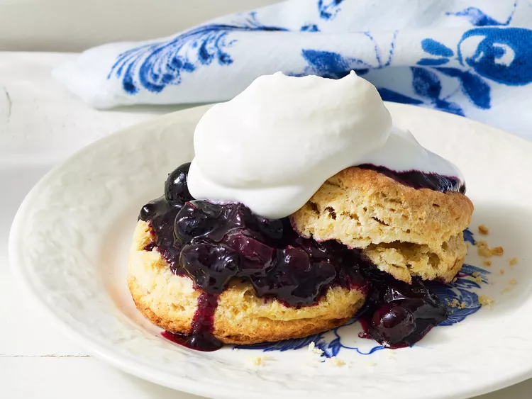

Blueberry Shortcake

Description
Blueberries sandwiched between homemade shortcake topped with cream - blueberry shortcake is the perfect summer dessert.
Ingredients
- Vanilla extract: The simple shortcakes start with vanilla extract mixed with heavy whipping cream.
- Heavy whipping cream: You’ll need heavy whipping cream for shortcakes and for the whipped cream.
- Egg: An egg lends moisture and helps bind the shortcake batter together.
- Lemon: Lemon zest brightens up the shortcakes, while lemon juice adds flavor to the blueberry topping.
- Flour: All-purpose flour gives the shortcake batter structure.
- Baking powder: Baking powder acts as a leavener, which means it helps the cakes rise.
- Sugar: Granulated sugar goes into the shortcakes and the blueberry topping, while powdered sugar is essential for homemade whipped cream.
- Salt: A pinch of salt enhances the overall flavor of the blueberry shortcakes, but it won’t make them taste salty.
- Butter: Butter adds moisture and richness to the shortcakes.
- Blueberries: Of course, you’ll need blueberries! Fresh is best, but frozen berries will work just fine.
Steps
- Make the blueberry topping.
- Make the shortcake batter.
- Roll out the pastry and cut into biscuit rounds.
- Bake until golden brown.
- Assemble the shortcakes with the topping and homemade whipped cream.